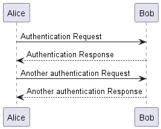

Dokumentacja¶
Wymagania wstępne¶
Python >=3.7
Plantuml.jar dodany do zmiennej środowiskowej PATH lub dodany do projektu
Proszę przygotować projekt, ze skonfigurowanym docker-compose (zadanie z poprzednich laboratoriów), wszytskie pliki i katalogi tworzymy w folderze *docs*, znajdującym się bezpośrednio w folderze nadrzędnym projektu.
Note
W systemie Windows 10 zalecana jest instalacja Python z Windows Store. W systemach Mac/Linux za pomocą odpowiednich menadżerów pakietów (jak brew czy apt).
Menadżer pakietów pip
Note
W większości przypadków będzie on zainstalowany podczas instalacji Python.
Instalacja pakietu Sphinx oraz szablonu “Read The Docs”¶
Tworzymy podkatalog docs w katalogu projektu
Tworzymy tzn. wirtualne środowisko Python virtualenv
python3.7 -m pip install virtualenv
python3.7 -m virtualenv venv
i uruchamiamy venv komendą:
source venv/bin/activate
Tworzenie pliku requirements.txt
Note
Plik requirements.txt jest zwykłym plikiem tekstowym w którym bardzo często zapisujemy zależności projektów tworzonych w Python. Każda linia w pliku odpowiada jednej zależności. Nazwa pliku w praktyce nie ma znaczenia, ale przyjęło się używać właśnie requirements.txt. Dzięki temu nowi programiści w projekcie od razu są w stanie zorientować się od czego powinni zacząć.
Dodanie zależności do requirements.txt
# zawartość requirements.txt
sphinx # podstawowy pakiet do budowania dokumentacji
sphinx_rtd_theme # szablon html
Instalacja pakietów
python -m pip install -r requirements.txt
Tworzenie zalążka dokumentacji¶
Najlepiej użyć do tego mechanizmu sphinx-quickstart
sphinx-quickstart
Następnie w pliku source/conf.py ustawiamy Read the Docs jako szablon HTML:
# -- Options for HTML output -------------------------------------------------
# The theme to use for HTML and HTML Help pages. See the documentation for
# a list of builtin themes.
#
html_theme = 'sphinx_rtd_theme'
Budowanie dokumentacji:¶
sphinx-quickstart wygenerował pliki systemu MAKE, które ułatwiają przebudowywanie dokumentacji
dla systemu Windows będzie to plik make.bat
dla Mac/Linux będzie polecenie make powinno być już dostępne
Standardowo przebudowanie dokumentacji wykonujemy poleceniem:
make html
W katalogu build/html/ zostanie wygenerowana dokumentacja w formacie HTML
Bardzo przydatnym jest też polecenie make clean, gdyż w przypadku generowanie diagramów albo innych dodatków nie będą one domyślnie ponownie generowane przy wywołaniu make html.
Można je też połączyć w postaci:
make clean & make html
Generowanie spisu treści¶
Domyślnie generowanie spisu treści bazuje na pliku source/index.rst i specjalnej derektywie .. toctree:: W praktyce możemy łączyć wiele derektyw toctree, co daje dużą elastyczność w sposobie nawigowania po wygenerowanej dokumentacji
.. toctree::
:maxdepth: 2 ".. głębokość sekcji w generowanym spisie"
:caption: Zawartość: ".. użyty tytuł"
getting_started
Indices and tables
==================
* :ref:`genindex`
* :ref:`modindex`
* :ref:`search`
Dodawanie kolejnych stron¶
Note
Przed przejściem do kolejnych kroków proszę zapoznać się z dokumentacją formatu reStructuredText (a.k.a. RST) oraz First Steps with Sphinx
W katalogu source proszę dodać następujące pliki:
wprowadzenie.rst
instalacja.rst
architektura.rst
api.rst
ad.1) W pliku wprowadzenie.rst proszę opisać swoimi słowami czym jest docker oraz docker-compose.
ad.2) W pliku instalacja.rst proszę podać instrukcję uruchamiania aplikacji za pomocą docker-compose. Wraz z wymaganiami, co trzeba mieć zainstalowane. Uwaga, poprawność konfiguracji docker-compose podlega ocenie.
ad.3) W pliku proszę narysować w postaci diagramu klas i przypadków użycia architekturę projektu. Diagramy powinny być generowane bezpośrednio z plików rst, z wykorzystaniem Plnatuml (instrukcja poniżej). W przypadku skorzystania z innych rozwiązań ocena zostanie obiżona o 0.5.
ad.4) Proszę opisać REST api (endpointy).
Note
Proszę pamiętać o dodawaniu odpowiednich sekcji:
Sekcja pierwszego poziomu
===========================
Sekcja drugiego poziomu
-------------------------
Kolejne poziomy
^^^^^^^^^^^^^^^^^
Note
Gotową dokumetację (wygenrowane pliki html oraz pliki źródłowe), wraz z projektem, który ona opisuje należy umieścić na repozytorium. Dokumentacja powinna zostać umieszczona w folderze docs.
Dodawanie możliwości generowania diagramów bezpośrednio z poziomu plików rst i narzędzia Plantuml.¶
Do pliku requirements.txt dodajemy kolejną zależność: sphinxcontrib-plantuml i ponownie wykonujemy polecenie:
python -m pip install -r requirements.txt
następnie w pliku source/conf.py należy dodać odpowiedni wpis:
extensions = ['sphinxcontrib.plantuml']
plantuml = "java -jar /opt/plantuml.jar" #jeśli jest dodane do PATH nie potrzeba podawać ścieżki bezwględnej do plantuml.jar
wówczas po dodaniu dyrektywy z definicją diagramu
.. uml::
Alice -> Bob: Authentication Request
Bob --> Alice: Authentication Response
Alice -> Bob: Another authentication Request
Alice <-- Bob: Another authentication Response
i wywołaniu polecenia:
make clean & make html
generator stworzy:

Sprawozdanie¶
Po zakończeniu ćwiczenia proszę wysłać prowadzącemu, na slacku link do repozytorium. Proszę pamiętać o nadaniu odpowiednich uprawnień dostępu lub o upublicznienie repozytorium.